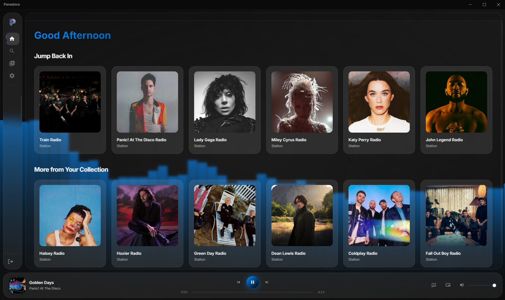

A modern desktop
app for Pandora.
An unofficial Pandora app for Windows, macOS, and Linux with station tuning, custom themes, lyrics, and an always-on-top mini player. Pandora Plus or Premium required.
An unofficial Pandora app for Windows, macOS, and Linux with station tuning, custom themes, lyrics, and an always-on-top mini player. Pandora Plus or Premium required.

Choose modes such as Discovery and Deep Cuts from the expanded Now Playing view.
Shape your station with thumbs up and down, and review recently played songs in Now Playing.
Panedora requests Pandora's aacplus (HE-AAC) format for station playback.
Collapse the app into a compact floating bar that stays gracefully on top of all other windows, including borderless fullscreen games.
Reactive bars, circles, and waves respond to frequency data from the playing audio. Other animated backgrounds are available in Settings.
Read lyrics for the current song, with scrolling and line highlighting when synchronized lyrics are available.
Choose from an array of curated Glassmorphism color palettes including Midnight Violet, Deep Ocean, Emerald Forest, and Neon Cyber. Every UI element reacts instantly.
Enable Adaptive Mode to have the application intelligently extract dominant and accent colors from the active album artwork in real time for a unified listening experience.
Select from 10 distinct floating background animations—from subtle orbs and particles to intense reactive audio visualizers—all inheriting your current color theme.
Panedora is a personal, educational, and experimental project created purely for fun. It was built as a creative exercise to explore modern UI design (Glassmorphism) and Electron-based desktop application development. This project is intended for personal use only and was developed with zero intent to cause harm, bypass security, or interfere with Pandora's business operations. It is shared as a demonstration of UI/UX design and technical integration.
A premium, immersive Pandora desktop client built with Electron. Panedora features a fully theme-driven Glassmorphism design system, persistent session management, and an enhanced playback experience that goes far beyond the standard Pandora web player.
A Note to Developers: This project is source-available and intended for educational purposes. You are free to explore and learn from the code. However, under the CC BY-NC-ND 4.0 license, you may not distribute modified versions of this software. Additionally, to prevent abuse of the legacy Pandora API, please do not modify or tamper with any of the application's backend logic.
Panedora is a modern Electron application utilizing a secure, multi-process architecture. The Main Process handles all secure Pandora API communication via Chromium's native network stack, while the Renderer Process handles the UI layer using vanilla HTML5/JS and modern CSS. Context isolation is strictly enforced via a preload script, meaning the frontend renderer communicates with the node backend entirely through a secure IPC bridge.
The desktop app signs in directly with Pandora and manages its session locally. Panedora does not run a separate server that receives your Pandora credentials.
Your credentials are used to sign in to Pandora. Saved passwords are encrypted locally using your operating system's secure storage when available, with an app encryption fallback.
Authentication tokens and encrypted credentials are stored locally on your machine in your user data directory. All auth data is fully cleared on sign-out.
Panedora includes no analytics or advertising trackers.
When you use Lyrics, Panedora sends the song title and artist to LRCLIB. App update checks and this website's download links use GitHub. These services receive network information such as your IP address, but not your Pandora credentials. Fonts and icons are served locally. This website is hosted on GitHub Pages.
Song search starts a station based on the selected track. Exact song playback is not supported yet, including on Premium accounts.
xattr -cr ~/Downloads/YOUR_FILE.dmg
(replace YOUR_FILE.dmg
with the downloaded file's name), then re-open the .dmg.